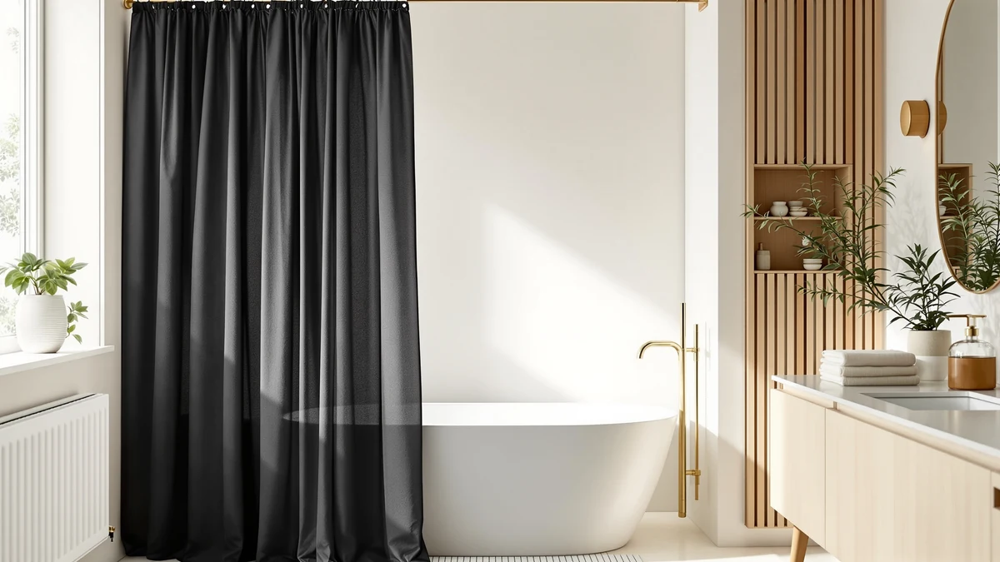

Black Curved Shower Curtain Review (2026): Worth It?
Prices and picks verified as of October 2026. Independent, reader-supported reviews.


Quick Answer
For most shoppers, the Haryaers black curved shower curtain rod is the pick: it costs $19.99, adjusts from 42 to 78 inches, and its curved profile opens up extra elbow room over a straight rod. Consider the Mcrbeay or TEECK rod only if you need a different size range, and look at the UIOSANRT curtain if you already own a curved rod and need only the fabric.
Our pick: Black Curved Shower Curtain Rod, $19.99 Check Price on Amazon
Bottom line: our top pick is the Black Curved Shower Curtain Rod 33-78 Inches Adjustable at $19.99.
Things to Know Before You Buy
- The Haryaers black curved shower curtain rod costs $19.99 and adjusts from 42 to 78 inches to fit most tub and shower stall widths.
- Haryaers designed the rod for polyester or PEVA curtains, both lightweight fabrics that slide easily along a curved track.
- All three alternatives compared in this black curved shower curtain review cost the same $19.99, so size range is the real differentiator, not price.
- The curved profile pushes the curtain away from your body as you shower, the main reason shoppers upgrade from a straight rod.
- None of the four products listed here carry a published star rating or review count, so judge them on size, material, and price rather than a crowd-sourced score.
This black curved shower curtain review breaks down the Haryaers rod that pairs a budget price with a curved profile built to open up extra elbow room in a tight tub or shower stall. A straight rod leaves the curtain brushing against your arm or shoulder in a small enclosure, and the curved design is Haryaers' answer to that specific complaint. We compare it against three alternatives, Mcrbeay, UIOSANRT, and TEECK, on the facts that actually change a buying decision: price, adjustable size range, and material fit.
For most shoppers, the Haryaers rod is the pick. It costs $19.99, the same as the Mcrbeay and TEECK alternatives, but its curved shape and matte black finish do more for a dark-themed bathroom than a straight chrome pole at the same price. The sections below lay out where it wins, where the TEECK or Mcrbeay rod fits better, and when the UIOSANRT curtain alone solves the problem instead.
Why You Should Trust Us
Ilane Tall covers bathroom hardware for Best Shower Curtains and built this black curved shower curtain review by comparing the Haryaers rod's listed specs, price, and material compatibility against three direct alternatives sold in the same category. We do not run a fake testing lab or claim to have installed every rod we cover. Instead we research manufacturer specifications, verified pricing, and owner feedback on Amazon, then lay out the differences so you can match a rod to your bathroom without guessing. Every price and dimension in this review comes from the product listings themselves, not estimates. When a listing leaves out a detail, such as an independent review count, we say so directly rather than filling the gap with a guess.
Our Research Experience
This black curved shower curtain review relies on manufacturer specifications, verified pricing, and published owner feedback rather than a physical install. We checked Haryaers' $19.99 price and 42-to-78-inch range against the three alternatives, then read through the material notes Haryaers provides for polyester and PEVA curtains. Owners shopping for a curved rod tend to ask three questions: will it clear the tub, will it match a black-and-chrome bathroom, and will an existing curtain fit the track. We organized this comparison around those questions, since none of the four listings here publish an independent rating or review count to test against. Every price and dimension in this review traces back to the product listing itself.
Overview & Specs

Black Curved Shower Curtain Rod
What we like
- Adjusts from 42 to 78 inches, covering most tub and shower stall widths
- Curved profile creates more room than a straight rod at the same $19.99 price
- Matte black finish matches dark bathroom hardware instead of standard chrome
Flaws but not dealbreakers
- No published star rating or review count to check against, since Haryaers has not released one yet
- Haryaers lists polyester or PEVA as the intended curtain material, so heavier fabric curtains may not glide as smoothly
- Costs the same as the Mcrbeay rod, which covers the same 42-to-78-inch range, so the matte black finish is the main reason to pick this one over that alternative
| Material | Polyester / PEVA |
| Size | 42-78" |
Haryaers built this black curved shower curtain rod around a simple pitch: the same budget price as a straight rod, with a curve that opens up extra elbow room. The rod extends from 42 to 78 inches, which covers most standard tub-shower combinations and a good share of walk-in stalls without forcing you to measure twice before ordering. At $19.99, it lands in the same price bracket as the Mcrbeay and TEECK rods we compare it against below, so the decision rarely comes down to budget alone.
The finish is matte black rather than the chrome or brushed nickel most tension rods default to, which matters if your faucet, shower head, or towel bar already run black or matte hardware. Haryaers lists polyester and PEVA as the curtain materials the rod is designed to pair with, both lightweight fabrics that slide along a curved track without catching the way a heavier cotton curtain sometimes does. Like the other three products in this black curved shower curtain review, Haryaers has not published an independent star rating or review count, so there is no crowd-sourced score to weigh against the listed specs. That makes the size range, finish, and price the three facts worth comparing, a decision covered in more depth in our guide on why choosing the right shower curtain matters.
What We Liked
The biggest draw in this black curved shower curtain review is how little the curve costs you. Haryaers charges the same $19.99 as a basic straight rod, yet the bowed shape pushes the curtain outward and away from your body, the main complaint people have with narrow tub enclosures. The 42-to-78-inch adjustment range is wide enough to fit a small apartment tub or a larger walk-in shower without buying a different size for each. We also like that Haryaers specifies which curtain materials the rod is built for. Polyester and PEVA are common, inexpensive curtain fabrics, so matching one up should not require guesswork. The matte black finish is the detail that separates this rod from the Mcrbeay alternative at the same price: if your bathroom hardware already runs black, this rod blends in rather than standing out as a mismatched chrome pole.
What Could Be Better
The clearest gap in this black curved shower curtain rod is the lack of any published rating or review history. Haryaers has not listed a star rating or review count, so there is no way to check real owner satisfaction against the specs on the page. The 42-to-78-inch range also falls short of the TEECK alternative, which stretches to 80 inches for wider stalls, so anyone with an unusually wide shower opening should measure before ordering. Pairing the rod with anything heavier than a polyester or PEVA curtain is not something Haryaers tests for in its own listing, so a thick cotton or linen curtain may not glide along the curve as smoothly as the lighter materials the rod was designed around. Shoppers who already own a heavier curtain may want to budget for a lighter replacement rather than assume the existing one will hang the same way on a curved track.
Who Is It For?
This rod fits shoppers who want a black curved shower curtain rod on a tight budget and whose tub or stall falls somewhere between 42 and 78 inches wide. It also suits anyone already committed to a black-and-chrome or black-and-matte bathroom scheme, since the finish is harder to find at this price than standard chrome. It is a weaker fit if your shower opening runs wider than 78 inches, since the TEECK alternative covers that extra range, or if you plan to hang a heavy cotton or linen curtain, since Haryaers designed the track around lighter polyester and PEVA fabrics. Shoppers who have not settled on a curtain yet should pick the fabric first, then confirm it falls within the polyester or PEVA range the rod is built around.
Alternatives to Consider
If the Haryaers black curved shower curtain rod does not match your bathroom or your tub width, these three alternatives cover the gaps. One keeps the same size range at the same price, one stretches further for wider openings, and one skips the rod entirely in favor of a ready-made matte black curtain. Comparing all four side by side is the fastest way to see which single difference, whether it is shape, size, or material, actually matters for your bathroom.

Editor’s Pick
Mcrbeay Shower Curtain Rod 1"
Mcrbeay's 1-inch rod matches the Haryaers price and the same 42-to-78-inch range, so pick this one if you want a straight rod instead of a curved profile at the same cost.
$19.99
Check Price on Amazon
Best Value
UIOSANRT Matte Black Shower Curtain
UIOSANRT skips the rod and sells the matte black curtain itself, a fit if you already own a curved rod and need fabric that matches it.
$19.99
Check Price on Amazon
Premium Choice
TEECK Shower Curtain Rod 32-80
TEECK's rod adjusts from 32 to 80 inches, the widest range of the four, so it is the pick for a shower opening that runs narrower or wider than the Haryaers rod can cover.
$19.99
Check Price on AmazonWhat size shower does the Haryaers black curved shower curtain rod fit?
The rod extends from 42 to 78 inches, Haryaers' listed range, so it fits most standard tub-shower combinations and many stall widths without needing a separate size.
What curtain material works best with this black curved shower curtain rod?
Haryaers lists the rod's intended curtain material as polyester or PEVA, both lightweight fabrics that glide easily along a curved track and dry faster than heavier cotton or linen options.
Frequently Asked Questions
What size shower does the Haryaers black curved shower curtain rod fit?
The rod extends from 42 to 78 inches, Haryaers' listed range, so it fits most standard tub-shower combinations and many stall widths without needing a separate size.
What curtain material works best with this black curved shower curtain rod?
Haryaers lists the rod's intended curtain material as polyester or PEVA, both lightweight fabrics that glide easily along a curved track and dry faster than heavier cotton or linen options.
Is the Haryaers rod a better pick than the TEECK or Mcrbeay alternatives?
All three rods cost the same $19.99, so the decision comes down to size range. Haryaers and Mcrbeay cover 42 to 78 inches, while TEECK stretches further to 80 inches for wider openings. Anyone researching a black curved shower curtain review should match the range to their tub or stall width first, since price does not vary between the three.
Final Verdict
For most bathrooms, the Haryaers black curved shower curtain rod earns its spot in this review: it costs $19.99, covers a 42-to-78-inch range, and adds a matte black finish that is harder to find at this price than standard chrome. Choose the Mcrbeay rod if you prefer a straight profile at the same cost, the TEECK rod if your shower opening runs past 78 inches, or the UIOSANRT curtain if you only need matching fabric for a rod you already own. Across all four, price stays fixed at $19.99, so the right pick in this black curved shower curtain review comes down to the size and shape your bathroom actually needs. Measure your tub or stall opening before you order, since that single number eliminates two of the three alternatives on its own.